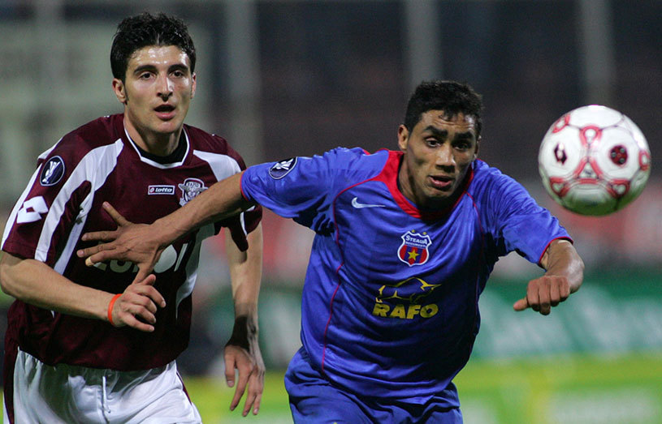

În primăvara anului 2006, în fotbalul mare din Europa contam și noi. Da, Liga 1 avea echipe de tradiție. Liga 1 avea echipe (multe) cu suporteri. Liga 1 avea jucători serioși. Și, da, Liga 1 trimitea, nu una, ci două echipe în sferturile de finală ale Cupei UEFA: Steaua și Rapid!
Partea proastă a fost că Steaua și Rapid se întâlneau în meci direct. Așadar, o ”uefantastică” trebuia să părăsească întrecerea. Pe de altă parte, după mulți, mulți ani, România reapărea în careul de ași al unei competiții europene. Sezonul 2005-2006 al Cupei UEFA a fost unul istoric pentru fotbalul românesc de după Revoluție. Steaua și Rapid mutau un derby intern pe plan european. Cele două echipe se întâlneau în sferturile Cupei UEFA, actuala Europa League, pentru obținerea unui loc în semifinalele competiției. Meciul tur a avut loc pe 30 martie. Până la acel ”sfert” de pomină, Steaua și Rapid avuseseră evoluții de excepție în grupe și ”optimi”.
În Grupa C, Steaua a terminat pe primul loc, fără înfrângere: victorii cu Lens (4-0) și Halmstad (3-0) şi remize cu Sampdoria și Hertha Berlin (ambele 0-0). Sistemul Cupei UEFA de atunci avea 5 echipe în grupă și se juca câte un singur meci între ele. Șaisprezecimile de finală i-au adus Stelei un rival accesibil. Chiar dacă venea din Eredivisie, Heerenveen nu i-a pus probleme trupei lui Cosmin Olăroiu, cel care îi luase locul lui Oleg Protasov, plecat din Ghencea după faza grupelor. Steliștii au obținut calificarea încă din Olanda, unde au învins cu 3-1. Nu au mai forțat în retur, pierzând 0-1. Mult mai dificil a fost adversarul din ”optimi”: Betis Sevilla. Prima manșă, de pe ”Lia Manoliu” a fost fără goluri, iar meciul decisiv s-a disputat pe terenul echipei spaniole. Steliştii au reuşit o victorie clară, 3-0, prin dubla lui Nicoliţă şi golul lui Victoraș Iacob şi s-au calificat în sferturi.
Nici rivala din Giulești nu s-a lăsat mai prejos. Rapid a terminat tot pe primul loc Grupa G, cu trei victorii şi o înfrângere. Succesele cu Rennes (2-0), Şahtior (1-0) și PAOK (1-0), plus înfrângerea cu VfB Stuttgart (1-2), i-au asigurat Rapidului prezența în primăvara europeană. În şaisprezecimi, Rapidul a întâlnit tocmai fosta adversară a Stelei, Hertha Berlin, de care a dispus cu două victorii, scor 1-0 şi 2-0. Bundesliga a continuat să ofere rivali giuleștenilor, iar optimile i-au oferit Rapidului tot un adversar german, puternica Hamburg. Cu Marius Niculae şi Mugurel Buga în formă de zile mari, Rapid a câștigat turul cu 2-0. Returul a fost unul dramatic pentru Răzvan Lucescu și echipa sa, iar calificarea a fost obținută grație golului în marcat în deplasare de Buga. Rezultatul final: 1-3 în a doua manșă şi 3-3 la general.
>Calificate superb după dublele cu Betis Sevilla și Hamburg, Steaua și Rapid au intrat în urne cu mari speranțe. Puteau întâlni Sevilla, Zenit, Middlesbrough, Levski sau Schalke 04, dar puteau să se și dueleze între ele. Sorții le-au hărăzit un duel intern. Era un duel al orgoliilor, un duel al tinerilor tehnicieni Răzvan Lucescu și Cosmin Olăroiu. Un duel al galeriilor bucureștene. Un duel al favoritelor la titlu în Liga 1. În prima manșă a ”sfertului” 100% românesc dintre Rapid și Steaua, peste 15,000 de fani s-au înghesuit pe arena bătrânului stadion Giulești, stadion care azi nu mai există. Steaua începea perfect meciul și făcea prima pasul către semifinale, prin Bănel Nicoliţă în minutul 5, dar rapidiştii erau readuşi în joc prin reușita lui Viorel Moldovan tot în minutul 5, dar al celei de-a doua reprize. Meciul se încheia 1-1, iar calificarea avea să se decidă în retur.
